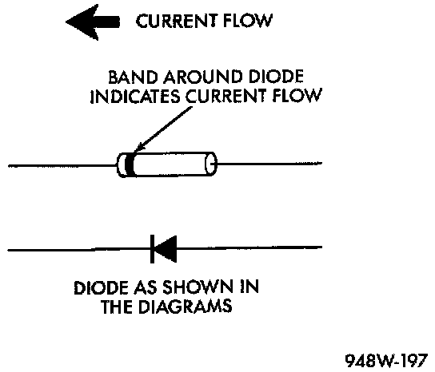

Diode Replacement
Diode Identification:

1. Disconnect the battery.
2. Locate the diode in the harness and remove the protective covering.
3. Remove the diode from the harness, pay attention to the current flow direction.
4. Remove the insulation from the wires in the harness. Only remove enough insulation to solder in the new diode.
5. Install the new diode in the harness, making sure current flow is correct.
6. Solder the connection together using rosin core solder only. Do not use acid core solder.
7. Tape the diode to the harness using electrical tape, making sure the diode is completely sealed from the elements.
8. Re-connect the battery and test affected systems.